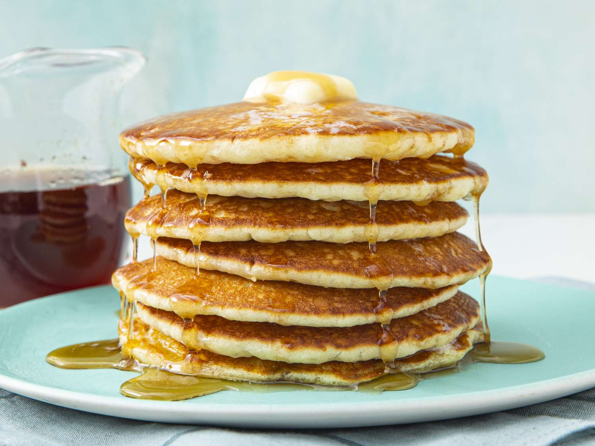

Pancakes

Description
Perfect pancakes are easier to make than you think. This pancake recipe produces thick, fluffy, and all-around delicious pancakes with just a few ingredients that are probably already in your kitchen (and it's so much better than the boxed stuff).
Ingredients
- 1 ½ cups all-purpose flour
- 3 ½ teaspoons baking powder
- 1 tablespoon white sugar
- ¼ teaspoon salt, or more to taste
- 1 ¼ cups milk
- 3 tablespoons butter, melted
- 1 egg
Steps
Preparing the Batter
- Sift flour, baking powder, sugar, and salt together in a large bowl.
- Make a well in the center and add milk, melted butter, and egg.
- Mix until smooth.
Cooking the Pancakes
- Heat a lightly oiled griddle or pan over medium-high heat.
- Pour or scoop the batter onto the griddle, using approximately 1/4 cup for each pancake.
- Cook until bubbles form and the edges are dry, about 2 to 3 minutes.
- Flip and cook until browned on the other side.
- Repeat with remaining batter.